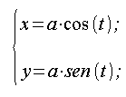
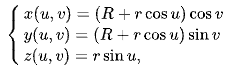

Introduzione
<img src="images/sparse.png" alt="matricesparsa" width="500"/>
Linear Algebric Representation (d'ora in avanti LAR) LAR è uno schema di rappresentazione generale per la modellazione geometrica e topologica (vedi \"Rappresentazione algebrica lineare per strutture topologiche\"). Il dominio dello schema è fornito da complessi cellulari mentre il suo codominio è un insieme di matrici sparse. Altro non è che un package scritto in linguaggio Julia per il calcolo geometrico di figure piane e solide. Essa fa uso della API (Application Programming Interface) ViewerGL, sviluppato dalla nostra università da una fork di Plasm.jl.
Matrici Sparse
Nell'analisi numerica e nel calcolo scientifico, una matrice sparsa o un array sparso è una matrice in cui la maggior parte degli elementi è zero. Non esiste una definizione rigida per quanto riguarda la proporzione di elementi con valore zero affinché una matrice si qualifichi come sparsa, ma un criterio comune è che il numero di elementi diversi da zero è all'incirca uguale al numero di righe o colonne. Al contrario, se la maggior parte degli elementi è diversa da zero, la matrice è considerata densa. Il numero di elementi di valore zero diviso per il numero totale di elementi (ad esempio, m × n per una matrice m × n) è talvolta indicato come la scarsità della matrice.
Complessi di Celle
Una cella n-dimensionale chiusa è uno spazio topologico che è omeomorfo ad una palla chiusa n-dimensionale. Per esempio, un simplesso è una cella chiusa, e più in generale, un politopo convesso è una cella chiusa. Una cella n-dimensionale aperta è uno spazio topologico omeomorfo alla palla aperta n-dimensionale. Una cella 0-dimensionale aperta (e chiusa) è un punto. Informalmente, un complesso di celle è uno spazio topologico ottenuto incollando fra loro un certo numero di celle chiuse. Formalmente, un complesso di celle è uno spazio di Hausdorff $\chi$ dotato di una partizione in celle aperte (di dimensioni variabili) che soddisfa due proprietà:
Per ogni cella n-dimensionale aperta C nella partizione di X, esiste una mappa continua f della palla n-dimensionale chiusa su X tale che
la restrizione di f all'interno della palla chiusa è un omeomorfismo sulla cella C, e
l'immagine del contorno della palla chiusa è contenuta nell'unione di un numero finito di celle aventi tutte dimensione inferiore ad n.
Un sottoinsieme di X è chiuso se e soltanto se incontra la chiusura di ciascuna cella in un insieme chiuso.
Il termine CW-complesso, mutuato dall'inglese, è a volte usato come sinonimo di complesso di celle. Le lettere C e W indicano i termini inglesi closure-finite e weak-topology e si riferiscono alle due proprietà elencate (la seconda proprietà infatti indica che la topologia su X è in un certo senso una topologia debole).
Illustrazione delle principali primitive
In questa sezione vengono descritte le principali primitive contenute nel package mapper.jl oggetto del lavoro di ottimizzazione previsto dal progetto.
Lar.approxVal
Lo scopo di questa funzione è molto semplice: fornendo in input un valore e un numero di cifre significative approssima il valore al numero di cifre richieste. Qualora il risultato fosse -0.0 il segno viene cambiato.
Lar.simplifyCells
A causa di errori numerici sulle coordinate mappate potrebbero verificarsi duplicazioni di vertici. Questa funzione ausiliaria trova ed elimina vertici duplicati e celle errate. I paramentri di input sono CV (vettore di vettori) e V (matrice). Viene creato un dizionario vertDict con chiave una colonne della matrice e valore un contatore incrementale. Per ogni vettore incell di CV la funzione crea un vettore vuoto outcell e per ogni elemento di v di incell preleva la colonna corrispondente di V. Applica la funzione approxVal ad ogni elemento della colonna. Se la colonna non è presente nel dizionario, incrementa l'indice e la inserisce nel dizionario con chiave il nuovo valore dell'indice. Inoltre aggiunge l'indice ad outcell e la colonna alla matrice W di output. Se invece la colonna appartiene già al dizionario, aggiunge ad outcell l'indice corrispondente presente nel dizionario. Infine l'eliminazione dei duplicati da outcell avviene mediante la creazione di un Set che per definizione non può contenere valori uguali.
Lar.circle
Calcola l'approssimazione di una circonferenza centrata nell'origine prendendo come input raggio, angolo e numero di segmenti utilizzati per l'approssimazione. Per la creazione di vertici e spigoli sfrutta la funzione cuboidGrid descritta nel modulo largrid.jl. La funzione moltiplica ogni vertice per il rapporto fra l'angolo e i segmenti inseriti in input. Mappa ogni vertice come segue:

e inserisce le coppie così generate in un vettore. Dopodiché affianca ogni vettore ottenendo una matrice con un numero di elementi doppi rispetto alla precedente. Infine applica simplifyCells al risultato.
Lar.toroidal
Calcola una approssimazione del toro, ovvero una superficie di rotazione ottenuta dalla rivoluzione di una circonferenza in uno spazio tridimensionale intorno a un asse ad essa complanare. Gli input richiesti sono raggio e angolo della circonferenza e della superficie di rotazione, oltre al numero di segmenti richiesti per l'approssimazione. La descrizione della funzione è simile alla precedente. Per la creazione di vertici e spigoli sfrutta la funzione simplexGrid descritta nel modulo simplexn.jl. La matrice V ottenuta possiede due righe ciascuna delle quali rappresenta i vertici di ciascuna delle due figure. Viene effettuato un prodotto fra V e una matrice 2 x 2 con il rapporto fra l'angolo e il numero segmenti inseriti in input rispettivamente per la prima e la seconda figura sulla diagonale principale e degli 0 sulla diagonale secondaria. Vengono estratte una per volta tutte le colonne di V mappandole nel seguente modo:

Infine applica simplifyCells al risultato.
Lar.cuboid
Restituisce un cubo d-dimensionale dove d è la dimensione comune degli array di input minpoint e maxpoint. Per la creazione di vertici e spigoli sfrutta la funzione cuboidGrid descritta nel modulo largrid.jl. Dopodiché tramite le funzioni esterne s e t crea delle matrici, le moltiplica fra loro e applica la funzione esterna apply al risultato.